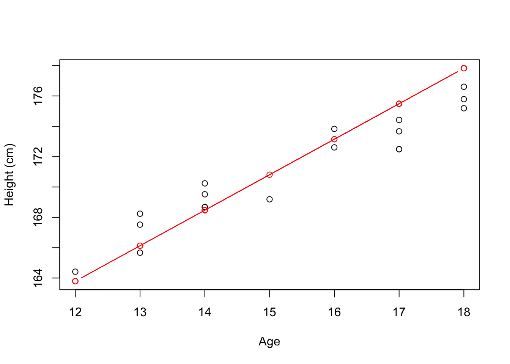

In R, and using just one line of code, create the following matrices and assign them to the variables W, X, Y, and Z, respectively. \[\begin{align}
\texttt{W} =
\begin{pmatrix}
1 & 4 & 7 \\
2 & 5 & 8 \\
3 & 6 & 9
\end{pmatrix},~
\texttt{X} =
\begin{pmatrix}
1 & 2 & 3 \\
4 & 5 & 6 \\
7 & 8 & 9
\end{pmatrix},~
\texttt{Y} =
\begin{pmatrix}
1 & 0 & 0 \\
0 & 1 & 0 \\
0 & 0 & 1
\end{pmatrix}, \text{ and }
\texttt{Z} =
\begin{pmatrix}
0 & 0 & 1 \\
0 & 1 & 0 \\
1 & 0 & 0
\end{pmatrix}.
\end{align}\] Also, compute \(\texttt{W}\odot\texttt{X}\) and \(\texttt{Y} \cdot \texttt{Z}\), such that \(\odot\) represents the element-wise multiplication and \(\cdot\) matrix multiplication.
W <- matrix(data = 1:9, nrow = 3, ncol = 3, byrow = FALSE); W## [,1] [,2] [,3]
## [1,] 1 4 7
## [2,] 2 5 8
## [3,] 3 6 9X <- matrix(data = 1:9, nrow = 3, ncol = 3, byrow = TRUE); X## [,1] [,2] [,3]
## [1,] 1 2 3
## [2,] 4 5 6
## [3,] 7 8 9Y <- diag(3); Y## [,1] [,2] [,3]
## [1,] 1 0 0
## [2,] 0 1 0
## [3,] 0 0 1Z <- apply(X = Y, MARGIN = 1, FUN = rev); Z## [,1] [,2] [,3]
## [1,] 0 0 1
## [2,] 0 1 0
## [3,] 1 0 0W * X## [,1] [,2] [,3]
## [1,] 1 8 21
## [2,] 8 25 48
## [3,] 21 48 81Y %*% Z## [,1] [,2] [,3]
## [1,] 0 0 1
## [2,] 0 1 0
## [3,] 1 0 0\(\phantom{-}\)
Create a matrix \([\texttt{A}]_{3 \times 3}\), such that \(\texttt{a}_{ij} = i + j\), \(\forall i, j\). Also, create \([\texttt{B}]_{3 \times 3}\), such that \(\texttt{b}_{ij} = \texttt{TRUE}\), if \(i + j\) is even, and \(\texttt{b}_{ij} = \texttt{FALSE}\), otherwise. Finally, create \([\texttt{C}]_{3 \times 3}\), such that \(\texttt{c}_{ij} = 1\), if \(i + j \in \{1, 2, 3\}\), and \(\texttt{c}_{ij} = 0\), otherwise.
A <- matrix(data = NA, nrow = 3, ncol = 3)
for (i in 1:3) {
for (j in 1:3) {
A[i, j] <- i + j
}
}
A## [,1] [,2] [,3]
## [1,] 2 3 4
## [2,] 3 4 5
## [3,] 4 5 6func_B <- function (b) {return(!as.logical(b %% 2))}
B <- apply(X = A, MARGIN = c(1, 2), func_B); B## [,1] [,2] [,3]
## [1,] TRUE FALSE TRUE
## [2,] FALSE TRUE FALSE
## [3,] TRUE FALSE TRUEfunc_C <- function (c) {return(as.numeric(c %in% c(1, 2, 3)))}
C <- apply(X = A, MARGIN = c(1, 2), func_C); C## [,1] [,2] [,3]
## [1,] 1 1 0
## [2,] 1 0 0
## [3,] 0 0 0\(\phantom{-}\)
Write a function for computing \(n!\), for any \(n\) non-negative integer. Print the 10 first numbers from the sequence \((\texttt{f}_n)_n\), such that \(\texttt{f}_n = n!\), for all \(n \in \mathbb{Z}_{+}\). Also, for \(n = 10\), compare your result with the function from (recall that, for any positive integer \(n\), \(\Gamma(n) = (n - 1)!\)).
factorial <- function (n) {
if ((n == 0) || (n == 1)) {return(1)}
else {return(n * factorial(n - 1))}
}
sapply(X = 0:9, FUN = factorial)## [1] 1 1 2 6 24 120 720 5040 40320 362880print(paste0('gamma(10) = ', gamma(10), ', and 9! = ', factorial(9)))## [1] "gamma(10) = 362880, and 9! = 362880"\(\phantom{-}\)
Create 3 five-element (row) vectors \(\texttt{p}\), \(\texttt{q}\), and \(\texttt{r}\), such that \(p\) contains the first 5 prime numbers, \(q\) the first 5 numbers from the Fibonacci sequence, and \(r\) the 5 first elements of the sequence \((\texttt{r}_n)_n\), such that \(\texttt{r}_n = \lfloor\sqrt{(n \cdot \pi)}\rfloor\), \(\forall n\), and \(\lfloor \cdot \rfloor\) is the floor function. Do NOT compute the terms manually (write functions!), so that you can easily extend it to larger vectors. Also, create the matrices \[\begin{align} \texttt{A} = \begin{pmatrix} \texttt{p} \\ \texttt{q} \\ \texttt{r} \end{pmatrix}, \text{ and } \texttt{B} = \begin{pmatrix} \texttt{p}^{\text{T}} & \texttt{q}^{\text{T}} & \texttt{r}^{\text{T}} \end{pmatrix}. \end{align}\]
prime_seq <- function (n, i = 1, primes = c()) {
if (length(primes) < n) {
if (i == 2 || sum(as.numeric(i %% (1:i) == 0)) == 2) {
prime_seq(n = n, i = i + 1, primes = c(primes, i))
} else {
prime_seq(n = n, i = i + 1, primes = primes)
}
} else {
return(primes)
}
}
fibonacci_seq <- function (n) {
fib = c()
for (i in 1:n) {
if (i == 1) {
fib <- c(fib, 0)
} else if(i == 2) {
fib <- c(fib, 1)
} else {
fib <- c(fib, fib[i - 1] + fib[i - 2])
}
}
return(fib)
}
r_seq <- function (n) {return(floor(sqrt((1:n) * pi)))}
p <- prime_seq(n = 5); p## [1] 2 3 5 7 11q <- fibonacci_seq(n = 5); q## [1] 0 1 1 2 3r <- r_seq(5); r## [1] 1 2 3 3 3A <- rbind(p, q, r); A## [,1] [,2] [,3] [,4] [,5]
## p 2 3 5 7 11
## q 0 1 1 2 3
## r 1 2 3 3 3B <- cbind(p, q, r); B## p q r
## [1,] 2 0 1
## [2,] 3 1 2
## [3,] 5 1 3
## [4,] 7 2 3
## [5,] 11 3 3\(\phantom{-}\)
Suppose that, for the population of male teenagers, we can model their height as \[\begin{align} \texttt{height}_i = \beta_0 + \beta_1 \cdot \texttt{age}_i + \epsilon_i, \text{ such that } \epsilon_i \sim \text{Normal}(0, \sigma^2_{\epsilon}). \end{align}\] Now, for a random sample of size \(n = 20\), we want to estimate \(\boldsymbol{\beta} = (\beta_0, \beta_1)^{\text{T}}\) as \(\hat{\boldsymbol{\beta}} = (\text{X}^{\text{T}}\text{X})^{-1}\text{X}^{\text{T}}\boldsymbol{y}\), such that \[\begin{align} \text{X} = \begin{pmatrix} 1 & \texttt{age}_1 \\ \vdots & \vdots \\ 1 & \texttt{age}_{20} \end{pmatrix}, \text{ and } \boldsymbol{y} = \begin{pmatrix} \texttt{height}_1 \\ \vdots \\ \texttt{height}_{20} \end{pmatrix}. \end{align}\] Compute \(\hat{\boldsymbol{\beta}}\) and plot \(\hat{\boldsymbol{y}} = \text{X}\hat{\boldsymbol{\beta}}\). For this exercise, generate the data set using the following code
set.seed(999)
beta_0 <- 140
beta_1 <- 2
ages <- sample(x = 12:18, size = 20, replace = TRUE)
heights <- round(x = beta_0 + beta_1 * ages + rnorm(n = 10, mean = 0, sd = 2),
digits = 2)
data <- data.frame(heights = heights, ages = ages)X <- cbind(rep(x = 1, times = 20), data$ages)
y <- as.matrix(data$heights)
beta_hat <- solve(t(X) %*% X) %*% t(X) %*% y; beta_hat## [,1]
## [1,] 143.005951
## [2,] 1.832552y_hat <- X %*% beta_hat
plot(x = data$ages, y = data$heights, xlab = 'Age', ylab = 'Height (cm)')
par(new = TRUE)
plot(x = data$ages, y = y_hat, type = 'b', col = 'red', axes = FALSE,
xlab = "", ylab = "")
# Alternatively
summary(lm(heights ~ ages, data))##
## Call:
## lm(formula = heights ~ ages, data = data)
##
## Residuals:
## Min 1Q Median 3Q Max
## -1.66934 -0.89120 0.01832 0.73273 1.83811
##
## Coefficients:
## Estimate Std. Error t value Pr(>|t|)
## (Intercept) 143.0060 1.8878 75.75 < 2e-16 ***
## ages 1.8326 0.1223 14.99 1.31e-11 ***
## ---
## Signif. codes: 0 '***' 0.001 '**' 0.01 '*' 0.05 '.' 0.1 ' ' 1
##
## Residual standard error: 1.135 on 18 degrees of freedom
## Multiple R-squared: 0.9258, Adjusted R-squared: 0.9217
## F-statistic: 224.7 on 1 and 18 DF, p-value: 1.306e-11